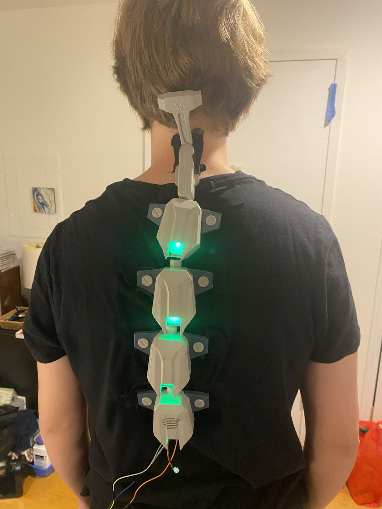

01Goal
I needed a Halloween costume, and a Sandevistan felt perfect: it looks cool, and it gave me a real reason to put electronics into something I would wear.
02How it works
- Segments. A neck piece and five printed segments. A bungee cord runs through all of them and holds the chain together while letting it bend with my back.
- Attachment. No straps. Magnets and sports tape hold it to my back.
- Two-part shells. The top and bottom of each segment screw together, so I could take every piece apart for filler primer and paint.
- Light. A chain of LEDs, soldered before assembly, runs through the same opening as the bungee cord. Each one sits behind a window of green plexiglass that I frosted and cut on a laser cutter.


03Design decisions
Paint first, then build
Screwing each segment's top and bottom together meant I could finish every part separately: filler primer, sanding and paint, with no electronics inside to protect. The LEDs only went in once the pieces looked the way I wanted.
One channel for cord and wires
The LED chain shares the opening the bungee cord runs through, so the wiring stays hidden inside the spine and bends with it.
Several rounds of design
The model on this page is the final version. It took several iterations in Fusion to get there.
04Result
I finished it just before my school's costume day and wore it there.